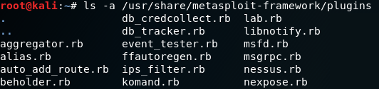

background-color: black background-image: url(pictures/metaploit_startscreen.png) class: center, middle --- layout: true background-color: black background-position: middle background-image: url(pictures/Metasploit-Framework.png) --- # <font color="#20C20E">.center[Agenda] 1.0 Einführung ins Metasploit Framework // kris + Anfänge/Geschichte + Was ist Metasploit(jetzt)? Rapid7 + Bibliotheken, was beinhalten diese. 2.0 Theoretische Hintergrund von Metasploit // kris + Architektur + Was leistet Metasploit? + Wie funktioniert die einzelnen Tools. + PC [-> Internet ->] PC2 -> Penetrationtesting Theorie 3.0 Toolbeschreibung // sasha + QuickSetup? Wird bei Kali Linux mitgeliefert. + Wie wendet man Metasploit an? Pro Version kommt mit Interface Commandozeilen Befehle Information Gathering Port Scanning Hunting for MSSQL Service Identification Password Sniffing SNMP sweeping Vulnerability Scanning with Metasploit (auxiliary/scanner/) smb_login VNC Scanner WMAP Web Scanner NeXpose Nessus Exploit Development Payloads MSFvenom MSFpayload MSFencode Using Exploits use <exploit> show targets show payloads show options show evasion set payload, Hosts, Ports exploit -> to start service + Wozu werden die Tools verwendet. + Beispiele! + Penetrationtesting Beispiel Theorie --- # <font color="#20C20E">.center[Agenda] 4.0 Ausgenutzte/Ausnutzbare Schwachstellen mit Metasploit // sasha + Welche Angriffsvektoren ermöglicht Metasploit? + Welche Schnittstellen/Angriffsflächen werden ausgenutzt? + Bekannte Schwachstellen? 5.0 Angriffsbeschreibung // sasha + Wie verläuft ein Angriff, welche Tools werden üblicherweise Verwendet? + Mehrere Beispiele? + Bekannte Hacks mit Metasploit? 6.0 Erweiterungen des Angriffs // beide + Welche Möglichkeiten gibt es den Angriff effektiver zu gestalten? + Selbstschutz vor Identifikation? Proxy? + Payload abliefern? --- # <font color="#20C20E">.center[Agenda] 7.0 Gegenmaßnahmen und ihre Wirksamkeit // kris + Antivirus? Hardware/Firewall? + Internet trennen! 8.0 Vorführung // beide + VM Machine Hack / Metasploitable 9.0 Rechtliche Belehrung // ??? + Rechtliche Fragestellungen zur Anwendung. 10.0 Links </font> --- ## <font color="#20C20E">.center[Einführung ins Metasploit Framework] ### Was ist ein Vulnerability Scanner? - automatisiertes Tool um Sicherheitslücken in einem System oder einer Applikation zu identifizieren - nehmen einen Fingerabdruck des Ziel-OSs(Version, Type) und der laufenden Anwendungen - nun können bestimmte Checks durchgeführt werden, mit denen man Schwachstellen im OS entdecken kann - diese Checks werden ausgeführt für: - offene Ports - Shares - veraltete oder unsichere Dienste - Passwort- und Benutzerrichtlinien - False-Positives lassen sich dabei nicht ausschließen - viele Unternehmen benutzen die Vulnerability Scanner um Out-Of-Date Systeme oder potenzielle Exploits zu entdecken - die Scanner spielen eine große Rolle im Penetration Testing, vorallem beim Integritätstest - einer dieser Vulnerability Scanner ist das **Metasploit Framework**_(MSF)_ </font> --- ## <font color="#20C20E">.center[Einführung ins Metasploit Framework] ### Was ist das Metasploit Framework(MSF)? - Metasploit ist ein Open-Source Projekt - das Teilprojekt Metasploit Framework(MSF) ist das bekannteste, es: - bietet Informationen über Sicherheitslücken - wird beim Penetration-Testing und bei der Entwicklung von IDS-Signaturen¹ eingesetzt - liefert die nötige Infrastruktur für triviale, routinemäßige und komplexe Tasks - darunter Fallen Exploits, Payloads, Encoders etc. - diese können mit Angriffsvektoren erweitert werden um hochentwickelte Angriffe: (i) zu erstellen und (ii) durchzuführen .footnote[¹ IDS = Intrusion Detection System] </font> --- ## <font color="#20C20E">.center[Einführung ins Metasploit Framework] ### Entwicklung von Metasploit - erfunden und entwickelt von H.D. Moore - die 1. Edition vom Perl-basierten Metasploit wurde im Oktober 2003 mit 11 Exploits veröffentlicht - mit Hilfe von Spoonm konnte Moore im April 2004 Metasploit 2.0 veröffentlichen, diese Verson enthielt bereits 19 Exploits und 27 Payloads - 2006 wurde Metasploit 3.0 veröffentlicht mit 177 Exploits und 104 Payloads - 2007 wurde das Framework komplett überarbeitet, mit Ruby als Programmiersprache - Rapid7, eine Sicherheitsfirma, die einheitliche Vulnerability Management Solutions zur Verfügung stellt, übernahm das Projekt 2009 - 2010 kamen Metasploit Express und Metasploit Pro zum Repertoire </font> --- ## <font color="#20C20E">.center[Einführung ins Metasploit Framework] ### Entwicklung von Metasploit - Metasploit Express zielt auf Security-Teams, die Sicherheitslücken verifizieren, ab und bietet: - eine automatisierte Beweissammlung - die Benutzung von Brute Force - zusätzlich wurde Nmap integriert und eine benutzerfreundliche GUI angelegt - Metasploit Pro fokusiert sich auf Pen-Tester und IT-Security Teams und bietet: - Schnellstart Wizards/MetaModules - erstellen und managen von Social Engineering Aktionen - erweiterte Pro Console, Web Application Testing, dynamische Payloads, Nexpose, VPN pivoting - 2011 wurde Metasploit 4.0 veröffentlicht mit inzwischen mehr als 1600 Exploits und über 438 Payload --- ## <font color="#20C20E">.center[Theoretische Hintergrund von Metasploit] ### Was ist Penetration-Testing überhaupt? - zu erst: Penetration-Testing und Vulnerability-Scanning sind nicht das Selbe - im Gegensatz zum Vulnerability-Scanning werden die Schwachstellen ausgenutzt - damit wird bestimmt, ob unauthorisierter Zugang oder andere schadhafte Aktivitäten möglich sind - Penetration Testing umfasst: - Network Penetration Testing - Application Security Testing - Sicherheitstests für Steuerungen und Prozesse in den Netzwerken und Anwendungen - wird von außerhalb und innerhalb des Netzwerkes durchgeführt --- background-image: ## <font color="#20C20E">.center[Theoretische Hintergrund von Metasploit] ### Metasploit Architecture <img src="pictures/Metasploitarchitecture.png" height="90%" width="90%"> --- ## <font color="#20C20E">.center[Theoretische Hintergrund von Metasploit] ### Metasploit Architecture - Filesystem - ist intuitive angelegt und in directories organisiert - findet sich in **/usr/share/metasploit-framework/** wieder - data: - editierbare Dateien von Binärdaten für bestimmte Exploits, Wordlists, Images, etc. - documentation: - Dokumentationen für das Framework <img src="pictures/Documentation.png" height="100%" width="100%"> - lib: - das Essenzielle des Frameworks --- ## <font color="#20C20E">.center[Theoretische Hintergrund von Metasploit] ### Metasploit Architecture - Filesystem - modules: - MSF Module für Exploits, Auxiliary, Post Module, Payloads, Encoders und Nop Generatoren <img src="pictures/Modules.png" height="100%" width="100%"> - plugins: - Plugins für Metasploit  - scripts: - Meterpreter und andere Scripts <img src="pictures/Scripts.png" height="100%" width="100%"> - tools: - Command-Line Utilities --- ## <font color="#20C20E">.center[Theoretische Hintergrund von Metasploit] ### Metasploit Architecture - Libraries - erlauben es Exploits auszuführen ohne zusätzlichen Code schreiben zu müssen, z.B. für HTTP-Requests oder Encoding von Payloads - einige der wichtigsten Libraries sind: - Rex: - basis Library für die meisten Aufgaben - behandelt Sockets, Protokolle, Textumwandlungen, etc. - SSL, SMB, HTTP, XOR, Base64, Unicode - Msf::Core: - stellt die "basis" API - definiert das Metasploit Framework - Msf::Base: - stellt die "freundliche" API - stellt vereinfachte API für die Benutzung im Framework --- ## <font color="#20C20E">.center[Theoretische Hintergrund von Metasploit] ### Metasploit Architecture - Modules und Locations - die Interaktionen mit Metasploit werden hauptsächlich über Module geführt - diese sind in zwei Directories gespeichert: - primäre Module in **/usr/share/metasploit-framework/modules/** - benutzerdefinierte Module in **~/.msf4/modules/** - alle Metasploitmodule sind in unterschiedlichen Directories organisiert - Exploits: - Module, die Payloads benutzen - Auxiliary: - Module für Port Scanner, Fuzzers, Sniffers, etc. <img src="pictures/Auxiliary.png" height="100%" width="100%"> --- ## <font color="#20C20E">.center[Theoretische Hintergrund von Metasploit] ### Metasploit Architecture - Modules und Locations - Payloads: - Code der per Remote ausgeführt wird - Encoders: - stellt sicher, dass Payloads ankommen - Nops: - hält Größe von Payloads konsistent <img src="pictures/Nops.png" height="100%" width="100%"> --- ## <font color="#20C20E">.center[Theoretische Hintergrund von Metasploit] ### Metasploit Architecture - Metasploit Object Model - im Metasploit Framework sind alle Module Ruby-Klassen: - Module erben von der typ-spezifischen Klasse - die typ-spezifischen Klassen erben von der Msf::Module Klasse - es gibt eine gemeinsame API zwischen den Modulen - jede Klasse hat genau einen Parent - jede Klasse kann mehrere Module haben - Module können neue Methoden hinzufügen - Module können Methoden überladen - Payloads sind etwas anders: - werden während der Laufzeit erstellt von verschiedenen Komponenten - Klebt Stagers mit Stages zusammen --- ## <font color="#20C20E">.center[Theoretische Hintergrund von Metasploit] ### Metasploit Architecture - Mixins und Plugins - Metasploit Module enthalten Mixins zum hinzufügen von Features - Metasploit Mixins: - fügen eine Klasse in eine Andere, ähnlich der Vererbung, aber nicht ganz - können eine Klassenmethode überschreiben - können neue Features mitbringen und erlaubt Module mit verschiedenen Spezifizierungen - Protokol-spezifisch(HTTP, SMB) - Verhaltens-spezifisch(Brute Force) - können das Verhalten ändern(Überladen) --- ## <font color="#20C20E">.center[Theoretische Hintergrund von Metasploit] ### Metasploit Architecture - Mixins und Plugins - Metasploit Plugins: - arbeiten direkt mit der API - manipulieren das Framework als Ganzes - haken sich in das Event Subsystem ein - automatisieren Tasks, die manuell aufwendig sind - können nur in der msfconsole verwendet werden - dieser können mit Plugins neue Commands gegeben werden - sie erweitern die gesamte Funktionalität des Frameworks --- ## <font color="#20C20E">.center[Theoretische Hintergrund von Metasploit] ### Metasploit Architecture - UI - MSFconsole: - zentrailisiertes, konsolen-basiertes Interface - einziger Weg um Zugriff auf nahezu alle Optionen von MSF zu bekommen - enthält die meisten Features - stabilste MSF Interface - Readline Support, Tabben, Command-Vervollständigung - ausführen von externen Commands ist möglich - Armitage: - skriptfähiges Team-Collaborations Tool - visualisiert Ziele, empfiehlt Exploits - bringt erweiterte Post-Exploitation-Funktionen mit - ermöglicht das Benutzen von gleichen Sitzungen - Teilen des Hosts, erfasster Daten und heruntergeladener Dateien - erhöht die Effektivität von Red Teams --- ## <font color="#20C20E">.center[Ausgenutzte/Ausnutzbare Schwachstellen mit metasploit]</font> --- ## <font color="#20C20E">.center[Angriffsbeschreibung]</font> --- ## <font color="#20C20E">.center[Toolbeschreibung]</font> --- ## <font color="#20C20E">.center[Vorführung]</font> --- ## <font color="#20C20E">.center[Gegenmaßnahmen und ihre Wirksamkeit] .left[Gegenmaßnahme] | Wirksamkeit¹ ------------- | ----------- | | | | | | Reparaturmöglichkeit für Dienste, für die Metasploit Payloads besitzt | .center[1] | | | | | | System sollte aktualisierbar sein für Patches und Sicherheits-Upgrades | .center[2] | | | | | | System mit realen Angriffsskripten evaluieren | .center[3] | | | | | | Angriffsskripte analysieren und Defensivskripte erstellen(besonders bei 0-Day-Exploits) | .center[4] | | | | | | Defensivskripte dem IDS hinzufügen | .center[5] | | | | | | System vom Internet trennen ¯\\\_(ツ)\_/¯ | .center[42] | | | | | | | | | | .footnote[¹ Wirksamkeit: 1(gering)-5(hoch)] --- ## <font color="#20C20E">.center[Erweiterungen des Angriffs]</font> --- ## <font color="#20C20E">.center[Links]</font> <font color="#20C20E">- Wikipedia Artikel zu <a href="https://en.wikipedia.org/wiki/Metasploit_Project" target="_blank">Metasploit</a></br></br> - <a href="https://www.metasploit.com/" target="_blank">Metasploit Framework</a></br></br> - <a href="https://infosecaddicts.com/whats-metasploit/" target="_blank">What is Metasploit</a></br></br> - <a href="https://docs.kali.org/general-use/starting-metasploit-framework-in-kali" target="_blank">Metasploit Framework with Kali</a></br></br> - <a href="https://null-byte.wonderhowto.com/how-to/metasploit-basics/" target="_blank">Metasploit Basics</a></br></br> - <a href="https://jonathansblog.co.uk/metasploit-tutorial-for-beginners" target="_blank">Metasploit Beginners Tutorial</a></br></br> - Free <a href="https://www.offensive-security.com/metasploit-unleashed/" target="_blank">Metasploit Ethical Hacking Course</a> by OffensiveSecurity</br></br> - <a href="https://www.blackmoreops.com/2015/11/03/how-to-search-exploits-in-metasploit/" target="_blank">How to search exploits</a></font> --- class: middle, center background-position: top ## <font color="#20C20E">.center[Vielen Dank! Fragen?]